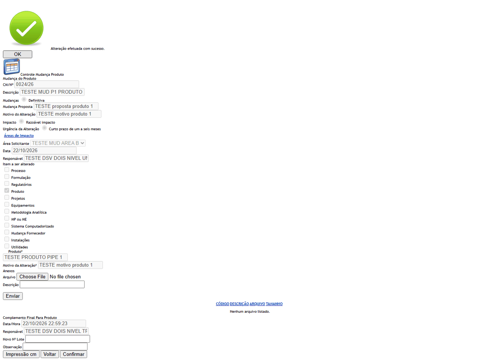
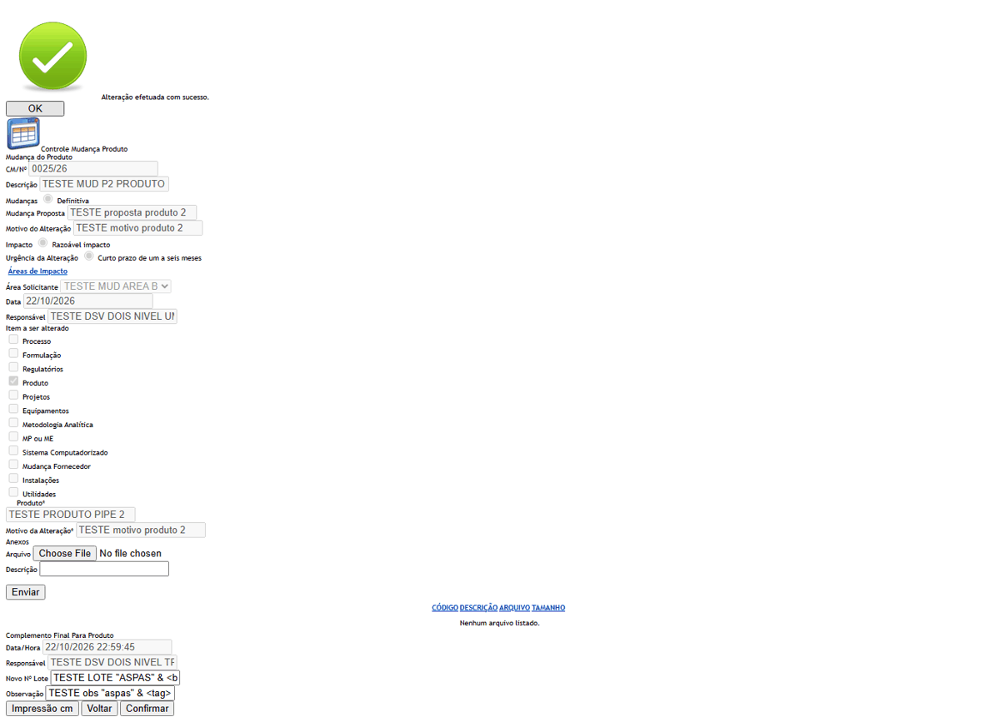
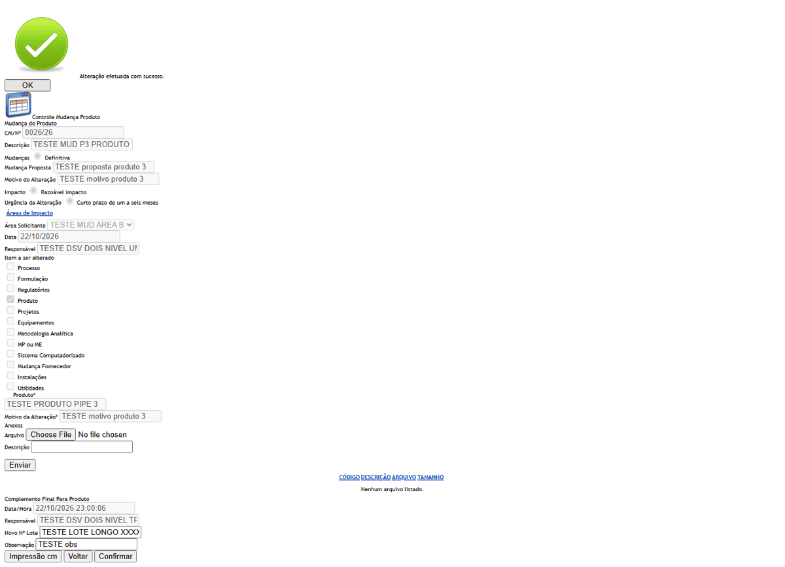

DV-GQ-006 · A aprovação do produto pela GQ não pede justificativa e não entra no histórico
O Controle Mudança Produto confirma a mudança com o lote sem pedir justificativa e leva a mudança a "Aceito". O histórico não registra a aprovação final, o lote nem a finalização do plano.
Como reproduzir o erro, passo a passo
- Abrir o Controle Mudança Produto de uma mudança e confirmar com o lote, sem justificativa.
- Abrir o histórico da mudança.
Esperado
Pedir justificativa e registrar a aprovação final e o lote no histórico.
Obtido
Confirmou sem justificativa e a mudança foi a "Aceito"; o histórico não traz a aprovação final, o lote nem a finalização do plano.
Evidência (captura da tela)
DV-GQ-256 · O histórico da mudança não registra a execução das ações, a finalização nem a passagem a Aceito
Finalizadas as mudanças 0016, 0017, 0018, 0019 e 0020, o histórico da mudança (pela Solicitação) não tem a conclusão, a execução das ações, a passagem para Pendente Finalização nem para Aceito: a última linha de cada uma é a inclusão das ações. Na aprovação final do produto também não há linha (ver DV-GQ-006).
Como reproduzir o erro, passo a passo
- Finalizar uma mudança pela Finalização Plano de Ação.
- Abrir o histórico da mudança pela Solicitação.
Esperado
Cada etapa (execução, conclusão, finalização, Aceito) no histórico, com quem, quando e por quê.
Obtido
A última linha é a inclusão das ações.
Sem captura de tela registrada para este defeito.
DV-GQ-261 · Confirmar o Controle Mudança Produto com Nº do Lote e Observação vazios grava e leva a Aceito
Na confirmação do produto, Novo Nº Lote e Observação vazios são aceitos: "Alteração efetuada com sucesso." e a mudança vai a Aceito. A consulta depois mostra o lote vazio.
Como reproduzir o erro, passo a passo
- Abrir o Controle Mudança Produto de uma mudança em Pendente Aprovação produto.
- Deixar Novo Nº Lote e Observação vazios e confirmar.
Esperado
Exigir o lote (e a justificativa) para aprovar o produto.
Obtido
Gravou e foi a Aceito com o lote vazio.
Evidência (captura da tela)

DV-GQ-262 · O lote do Controle Mudança Produto é texto livre, sem conferência com a Produção ou o Estoque
Aspas, "&", "<b>", apóstrofo, ponto e vírgula e um lote de 600 caracteres foram aceitos e gravados. O lote não existe na Produção nem no Estoque e nenhuma conferência é feita.
Como reproduzir o erro, passo a passo
- Confirmar duas mudanças: uma com lote cheio de sinais e outra com 600 caracteres.
Esperado
Lote conferido com o cadastro e limite de tamanho.
Obtido
Tudo aceito e gravado.
Evidência (captura da tela)


DV-GQ-275 · O filtro é ignorado: Solicitação 45, Pré-Avaliação 16, Avaliação 33 e Controle Produto 9 (esperado 29, 11, 16 e 6)
O filtro é ignorado: Solicitação 45, Pré-Avaliação 16, Avaliação 33 e Controle Produto 9 (esperado 29, 11, 16 e 6). Na Liberação e no Plano funciona.
Como reproduzir o erro, passo a passo
- Preencher só a Data Fim (22/10/2026) e Pesquisar.
Esperado
Só as solicitações com data até 22/10/2026 (29 na Solicitação).
Obtido
O filtro é ignorado: Solicitação 45, Pré-Avaliação 16, Avaliação 33 e Controle Produto 9 (esperado 29, 11, 16 e 6). Na Liberação e no Plano funciona.
Evidência (captura da tela)